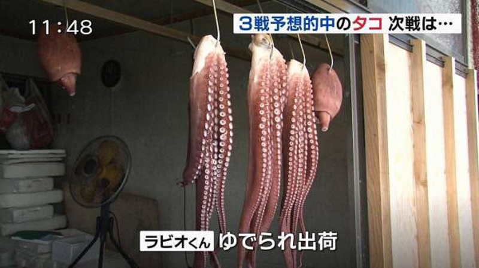

あの試合に関して思ったことを整理しておこう
執筆日時：
西野さんの運をみるに
— だるねとやなさん (@daruyanagi) 2018年6月27日
- 最終戦は日本負け
- でもグループリーグは突破してしまう
って感じになるんでは（
戦前の予想がピッタリ当たってちょっといい気分だった（？）けど、あんな試合には全く納得できない。西野監督は個人的に好きだし（一応、ガンバ大阪のファンだからね、クラブワールドカップも観に行ったんだよ！）、ハリルホジッチ監督の更迭には賛成しないけど、この短時間でチームをまとめて結果を出していることに対しては感謝もしてるし、誇りにも感じる。でも、あの判断は――たぶん、結果的に吉と出るだろうと思ってはいたけれど――手放しで賛同できるものでは決してなかったし、賢しらぶって肯定する必要もないと思う。
試合が終わったとき、まず感じたのはグループリーグ突破を果たした安堵と、そして「セネガルに申し訳ないな」という気持ちだった。喜びはなかった。
セネガルは十分良いチームだったし、フェアポイントで後塵を拝したものの、ダーティーなタックルやわざとらしいシミュレーションをするようなチームでは決してなかった（おい、どこぞの隣国氏、聴いてるか？）。コロンビア戦であのレッドカードがなければ、決勝トーナメントに進んだのはセネガルだったのではないだろうか――まぁ、タラレバなんか言っても仕方ないけど。
なぜセネガルに申し訳なく感じたのか、それはよく自分の中でもわかってないのだけど、コロンビアとセネガルが「フェアに」戦ったからこそ、日本が決勝トーナメントに進出できたというのが理由の一つにあるだろう。日本がポーランドに1点を許し、そのあとコロンビアが1点を奪うまでのほんの少しの間、日本には決勝トーナメント進出の目がなかった。あのとき、日本の状態を知ってコロンビアとセネガルが「アンフェアに」――ちょうど日本とポーランドがそのあとやったみたいに――戦っていれば、西野監督には策を弄する余地すらなかったはずだ。
もう一つの理由は、やはり他力に完全にすがってしまったことだろう。要はあのとき、西野監督は日本が自力で局面を打開することを早々に諦め、ある意味セネガルに「点を入れるな」と呪いをかけたわけだ。なんと後ろめたいことよ。自分はセネガル戦をリアルタイムで見られなかったのだけど、あとから見た限りでは熱戦と評していい試合だったと思う。その「戦友」に対して、なんという態度！ FIFA の行動規約を持ち出すまでもなく、とるべき戦術ではなかったと感じる。
ついでに言えば、「日本がポーランドに追いつける確率は低かった」という人もいるけれど、自分はそこまで低いとは思わなかった。また、「攻めなければポーランドに追加点をやることはない」とも、到底思えなかった。実際、数は少なかったけどキモが冷えるシーンはあった。セネガルが追いつく確率、日本が守りに入ってなおポーランドが追加点を奪う確率も考えて、あの戦術は最善と言えただろうか。結果的には問題がなかったことは認めるけど。
なので、あの戦術と決勝トーナメント進出を勝ち得たことに因果関係があった――あの戦術でなければ、決勝トーナメントに進出できなかった――と断ずることはできない、と個人的に思ってる。まぁ、そこは見る人それぞれの判断ではあると思うけど、もし関係がないのであれば、あたら悪名を負っただけだったということになる。
平たく言えば、こういう言われ方を許すようなやり方はしてほしくなかったな。正々堂々とやっても、同じ結果か、あわよくば引き分けられたんじゃないか。逆の可能性もあるけど、それはそれで仕方がない……。まぁ、結局こういう部分で、観客にすぎない自分と、結果を要求された監督との違いがでるんだろうというのは少しわかる。ここが完全に責められない部分だ。
自分は一観客にすぎないので、一観客としての立場でこの問題をみようと思うが、その場合、物事の優先度はこんな感じになろう。
- 決勝トーナメントには進出する
- 試合には引き分け以上の結果を出し、自力で決める
- もしそれが無理でも、恥のない戦いをしてほし
この最初の条件を満たす監督が日本にはそれほどいないことを考えれば、またこの戦術に己を殺して従った選手たちを思えば（長谷部が出ていくだけでちゃんとまとまるの、すげえな……）、「試合はクソだった」と胸張って言えるけど「監督・チームもクソ」とまでは言えない。そもそも、サッカーの試合を見ていれば、ああいう消化試合になってしまうことはまれによくある。ワールドカップの舞台でもこれまで何度もあったし、それに付随する悲劇・喜劇もあった（調べると面白いと思うよ、いつしかの……フランスだっけ？ とか）。今回、日本がその悲喜劇に加わらずに済んだのは不幸中の幸いなのだろう。
ダラダラと書いてしまったが、自分が言いたいのは「あの試合は紛れもなくクソ」だし、あれを「肯定なんかしちゃいけない」、でも「監督もチームも責められない、仕方がない」といったところか。もしあの試合を肯定できるとすれば、それは決勝トーナメントの第1戦で、悪名を被ってまで6人を温存した甲斐があったと感じられる、世界もビックリな結果を出したときだろう。
自分はそうなることにとても、とても期待している。
次戦の予想

何対何かは知らんけど、両チームが1点以上取りあって引き分け、延長戦でもケリが付かず、PK で決着。川島が汚名返上のスーパーセーブを決めて勝つ。もし当たったら、ゆでられて、出荷されてもいいよ。